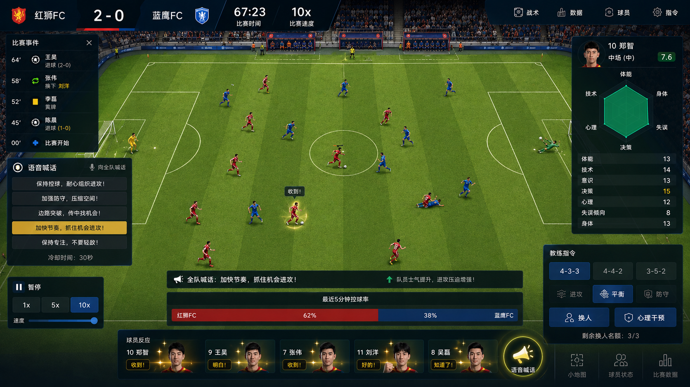

你不是球员，
你是教练。
AI FC 是一款 AI 驱动的足球教练模拟游戏。你培养 AI 球员、编排战术、 在 10 倍速的比赛中实时干预。球员有体能、有情绪、会失误、会进化—— 恰到好处的不完美，才是真实足球的魅力。
七个维度，
定义一个不完美的 AI 球员。
每个 AI 球员拥有体能、技术、意识、决策、心理、失误、身体七个维度。 视野决定他「看到」多少机会，决策力决定他「选择」是否合理， 心理决定他落后时是崩盘还是绝平。失误率永远不为零——这是 AI 的人类感。
定向训练，
看着小球员长成核心。
选择单个球员，进入定向训练。技术、体能、战术、心理四类训练各有侧重。 训练有边际递减——60 到 70 容易，90 到 95 极难。过度训练会受伤， 长期不练会遗忘。养成感，是这套游戏最强的留存驱动力。
一场 90 分钟，
压缩成9 分钟的博弈。
俯视 2D 球场，22 个 AI 球员同时决策。完整的物理引擎处理球的运动、 球员碰撞、弹射角度。体力好的覆盖全场，视野好的中场送出直塞， 决策差的前锋单刀时犹豫被追上——没有任何脚本，全是属性与决策树的有机结果。
等距视角下的绿茵战况。

暂停比赛，下达指令。
核心玩法不是看着球赛发呆。你随时可以暂停，切换阵型、换人、 对单个球员下指令、中场做心理干预。这是 FIFA 与 FM 之间的差异化地带。
感知 → 思考 → 行动，
每帧一轮的三层流水线。
球员的 AI 不是一颗巨大的树，而是三层流水线。事件驱动 + 定时轮询双层架构， 让攻转守的瞬间反应与跑位的周期规划同时存在。规则引擎 + 数值系统， 每帧 22 人决策在 2ms 内完成——不需要大模型。
扇形视野 + 距离衰减。视野 90 的球员感知半径 60m、扇角 150°；视野 30 的只能看到身边 3-4 人。视野外是估计值，越远越不准。
情境决策（每 0.5s）+ 微观动作（每帧）。决策力不是改成功率，而是改决策树节点权重——95 的前锋会选传球助攻，25 的盲目射门打飞。
移动 + 球操作 + 抢断。执行带高斯偏差：技术 85 传球偏差 ±2°，技术 45 疲劳高压下偏差 ±10°。这就是「人脚」的来源。
五个系统，一个完整的教练人生。
离线规则引擎，是这件产品的底座。
- 规则引擎单次决策0.01ms
- LLM API 单次500-3000ms
- 22 人 / 帧2ms 全完成
- 每场 API 成本$2+ / 不可持续
球场的绿，与战术板的白。
- ✦ 战术板美学：白线、圆点、扇形视野
- ✦ 数值优先：属性条 / mono 字体贯穿全局
- ✦ 不完美即真实：失误提示用 coral 暖警示
- ✦ 进化与成就用 gold，行为与能量用 coral